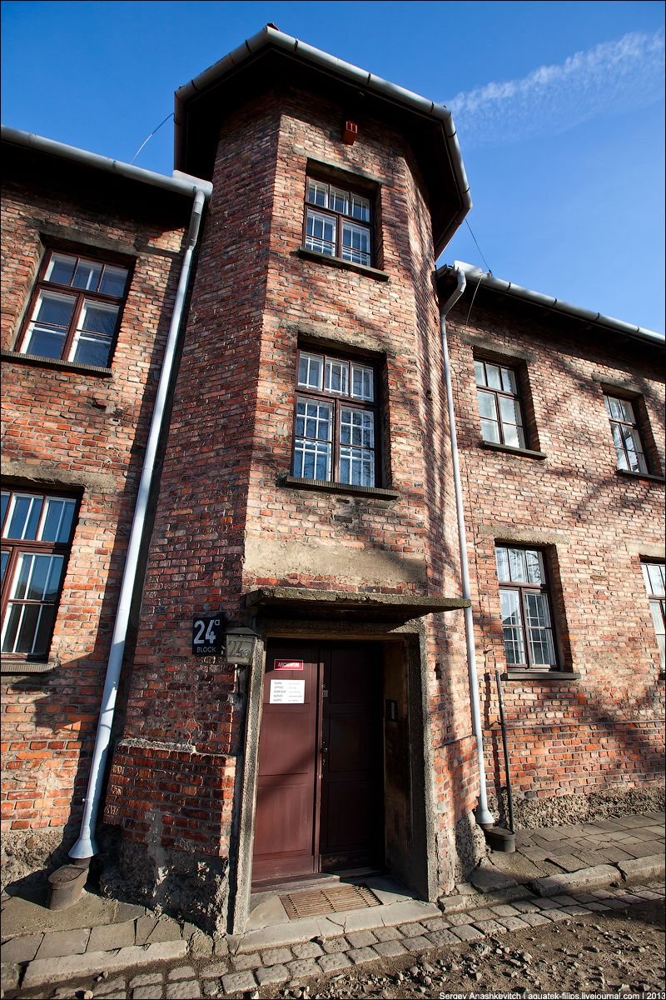

Концентрационный лагерь "Освенцим"
Комплекс немецких концентрационных лагерей и лагерей смерти, располагавшийся в 1940—1945 годах в гау Верхняя Силезия (нем. Gau Oberschlesien) к западу от Генерал-губернаторства, около города Освенцима, который в 1939 году указом Гитлера был присоединён к территории Третьего рейха, в 60 км к западу от Кракова. В мировой практике принято использовать немецкое название «Аушвиц», а не польское «Освенцим», поскольку именно немецкое название использовалось нацистской администрацией. В советских и российских (русскоязычных) справочных изданиях и СМИ исторически преимущественно используется польское название, немецкое название используется гораздо реже.
Функционировать концлагерь Аушвиц начал в 1940 году, будучи лагерем для польских политзаключенных. Первыми узниками Аушвица стали 728 поляков из тюрьмы в Тарнове. На момент основания в лагере было 20 построек - бывшие польские военные казармы. Часть из них переоборудовали для массового содержания людей, а также было дополнительно построено еще 6 корпусов. Среднее количество узников колебалось в пределах 13-16 тысяч человек, а в 1942 году достигло 20 тысяч. Лагерь Аушвиц стал базовым лагерем для целой сети новых лагерей - в 1941 году в 3 км был построен лагерь Аушвиц II - Биркенау, а в 1943 году - Аушвиц III - Моновиц.
Заключенные в лагере Аушвиц I жили в кирпичных блоках, в Аушвиц II -Биркенау - преимущественно в деревянных бараках. Кирпичные блоки были только в женской части лагеря Аушвиц II. За все время существования лагеря Аушвиц I, на лагерном учете здесь состояло около 400 тысяч узников разных национальностей, советских военнопленных и узников корпуса №11, ожидающих заключения полицейского трибунала гестапо. Одним из бедствий лагерной жизни были поверки, на которых проверяли численность заключенных. Они длились по несколько, а иногда свыше 10 часов (например, 19 часов 6 июля 1940 года).
Около 1,4 млн человек, из которых около 1,1 млн составляли евреи, были умерщвлены в Освенциме в 1941—1945 годах. В то же время по оценке историка Г. Д. Комкова в статье в Большой советской энциклопедии общее число жертв составило свыше 4 млн человек. Аушвиц-Биркенау был крупнейшим и наиболее долго просуществовавшим из нацистских лагерей уничтожения, поэтому он стал одним из главных символов Холокоста.
На территории лагеря в 1947 году был создан музей, который включён в список Всемирного наследия ЮНЕСКО. Музей зарегистрирован в Государственном реестре музеев Польши.